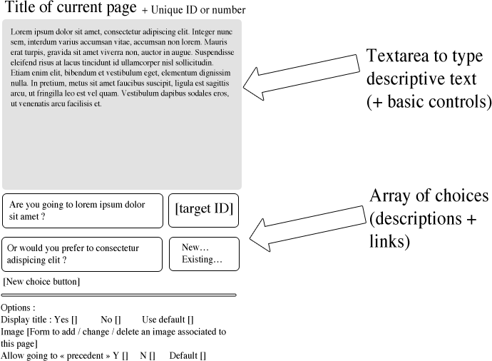

Pages are displayed in a tree, with arrows showing the path from pages to others. You can see information on pages on when your mouse hovers or clicks on them.
Extra project in far future: adding links between pages from this "tree view".
You can edit book title, book cover, book summary… but you can edit more technical options too : allow button "cheat" (or "previous page") by default, etc.

Todo: decide how to…
To do
Displays current page & current state of character (HP, MP, objects).
Todo: think about fighting & random events (truly random, or based on some character statistics ?).
Character data/state: stored in the browser localstorage to avoid session storage on server? (Think to server-side validation, though…)
Book storage structure idea: